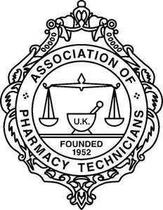

Trade Mark Journal No.2025/030 25 July 2025
UK00004211506 30 May 2025 (9,16,35,41,42,44)

- Class 9
- Downloadable and electronic publications; e-books; e-journals; audio books, podcasts.
- Class 16
- Printed matter; printed publications; journals, magazines, newsletters; teaching and instructional materials.
- Class 35
- Promotional services; business and management advice; organisational services, namely administration of a membership programme, organisation and administration of a professional association, provision of business organisation services and consultancy on business organisation to association members; subscription to medical journals; subscription to electronic journals; advertising and promotional services; arranging and placing of advertisements.
- Class 41
- Publishing and electronic publishing; publishing of books, journals and handbooks in the field of medicine; education, teaching and training services; provision of training services; organisation of seminars, conferences and workshops; provision of education, guidance and information relating to educational courses; provision of educational information via the Internet.
- Class 42
- Research and development; medical and pharmaceutical research; scientific research in the field of medicine and pharmacy; scientific and technological services and research and design relating thereto; clinical research; medical research services; hosting of digital content, namely online journals and blogs.
- Class 44
- Information and advisory services relating to medicine and healthcare; provision of medical information; provision of pharmaceutical information; pharmacy advice and dispensing information.
Association of Pharmacy Technicians (UK)
Representative: HGF Limited